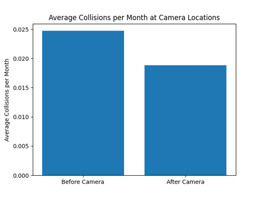
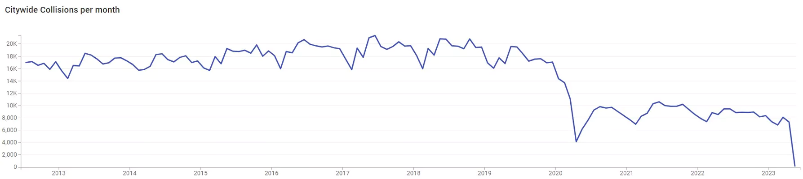

Speed Camera Affirmation Model
Antonio Iadicicco - 2023
Introduction
Introduction
As the largest source of income of all NYC traffic
tickets, speed cameras have generated significant debate
among the public and policymakers alike. With Mayor Eric
Adams recently announcing the expansion of their operation
to 24/7 operation, it is vital that we carefully evaluate
their role in promoting road safety, especially
considering that their initial deployment was focused on
protecting school children in designated school zones.
This project aims to provide an unbiased, evidence-based analysis of speed camera effectiveness in the context of New York City's unique urban environment. Through rigorous investigation, we will attempt to shed light on the critical question of whether speed cameras are truly fulfilling their intended purpose, or if alternative approaches to traffic management should be considered.
This project aims to provide an unbiased, evidence-based analysis of speed camera effectiveness in the context of New York City's unique urban environment. Through rigorous investigation, we will attempt to shed light on the critical question of whether speed cameras are truly fulfilling their intended purpose, or if alternative approaches to traffic management should be considered.
Data
Sources
Traffic Ticket Datasets (2014-2023): comprehensive data on
traffic tickets issued within New York City, specifically
focusing on those related to speed camera violations.
Speed Camera Locations: Extracted from the aforementioned traffic ticket datasets.
NYC Collisions Database (2012-2023): This dataset provides detailed information on vehicle collisions and pedestrian injuries within the city.
For a detailed list of data sources, please see the data sources page
Speed Camera Locations: Extracted from the aforementioned traffic ticket datasets.
NYC Collisions Database (2012-2023): This dataset provides detailed information on vehicle collisions and pedestrian injuries within the city.
For a detailed list of data sources, please see the data sources page
Methodology
Introduction
Data Processing:
a. Geocoding Speed Camera locations: To facilitate spatial analysis, I geocoded the extracted speed camera locations to obtain their precise geographic coordinates.
b. Fuzz matching street and intersection names: This step involved matching collision data (street and intersection names) with the corresponding speed camera data (street and intersection names), accounting for possible discrepancies in naming conventions.
c. Geomatching collisions to speed camera locations: I then associated collisions with their respective speed camera locations, based on the matched street and intersection data.
Data Analysis:
Intersection snapshots (before and after speed camera installation): By comparing collision data before and after the installation of speed cameras, I was able to generate an accurate snapshot of the impact of speed cameras on vehicle collisions and pedestrian injuries at each intersection.
a. Geocoding Speed Camera locations: To facilitate spatial analysis, I geocoded the extracted speed camera locations to obtain their precise geographic coordinates.
b. Fuzz matching street and intersection names: This step involved matching collision data (street and intersection names) with the corresponding speed camera data (street and intersection names), accounting for possible discrepancies in naming conventions.
c. Geomatching collisions to speed camera locations: I then associated collisions with their respective speed camera locations, based on the matched street and intersection data.
Data Analysis:
Intersection snapshots (before and after speed camera installation): By comparing collision data before and after the installation of speed cameras, I was able to generate an accurate snapshot of the impact of speed cameras on vehicle collisions and pedestrian injuries at each intersection.

Collisions
This chart displays the monthly trend of all intersections with speed cameras (before and after installation) over time. This aids us in further investigating whether the reduction in collisions is the result of the speed cameras, or other environmental factors.Tickets
This chart reveals the frequency of speed camera-generated tickets issued monthly. Thisvisualization aids in understanding how the intensity of enforcement may impact driver behavior and consequently affect collision rates.


Injuries
This chart highlights the variations and trends in automobile related injury occurrences at speed camera intersections. This helps us investigate whether the presence of speed cameras leads to any noticeable reduction in pedestrian injuries over time.Fatalities
This chart presents the monthly number of traffic-related fatalities at speed camera intersections, assisting us in finding any potential association between speed camera deployment and traffic safety improvements further. By observing trends and changes in fatality rates, we can evaluate the effectiveness of speed cameras in enhancing road safety and saving lives.

Collisions per month before vs after camera
This chart shows the average number of collisions at a speed camera intersection before and after the installation of the camera. This points directly to the possibility of the cameras having a positive effect on traffic safety, though other environmental factors must be investigated further.Model Evaluations
Tickets


Collisions
Injuries


Fatalities
